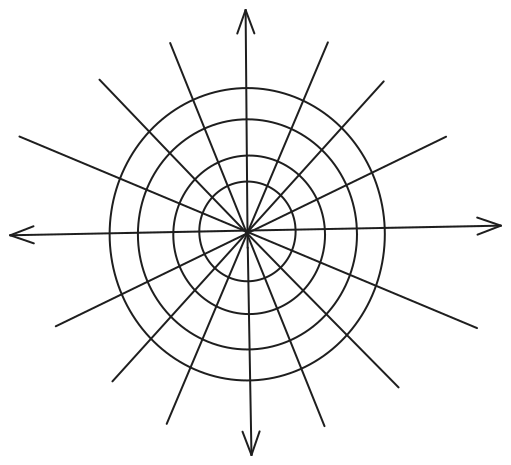

10. Applications of First order Differential Equations
Dated: 10-11-2024
In order to translate a physical phenomena in terms of mathematics, we strive for a set of equations which describe the system adequately.
This set of equations is called Model for the phenomena.
Steps of Building a Model
- Clearly state the assumptions on which the model will be based. These assumptions should describe the relationships among quantities to be studied.
- Completely describe the parameters and variables to be used in the model.
- Use the assumptions from
step 1to derive the mathematical equations relating toparametersandvariablesfromstep 2.
Applications
- Orthogonal Trajectories
- Population dynamics
- Radioactivity decay
- Newton's law of cooling
- Carbon dating
- Chemical reactions
We know that solutions to first order linear differential equations1 can be given by implicit equations of the form
Where \(C\) is a family of curves.
Member curves can be obtained by fixing \(C\).
Similarly for an \(n^{\text{th}}\) order differential equation,
Now the question is, can we represent an \(n^{\text{th}}\) order differential equation with \(n\) parameter family of curves as an \(n^{\text{th}}\) order differential equation with no parameters but still representing the family?
The answer in most cases is yes.
Some clues on how we can proceed.
- Differentiate with respect to \(x\) and get an equation involving \(x\), \(y\), \(\frac{dy}{dx}\) and \(C\).
- Using the original equation, we may be able to eliminate \(C\) from the new equation.
- Do some algebra and re-write the equation in
explicit form
Example
Let us say we have following families of curves.
The first family represents straight lines2 passing through the origin.
The second family represents circles centered at the origin.
Something like this

{kind=link}
It is clear that the lines2 are perpendicular to the tangent lines to the circles at the point of intersections.
Orthogonal Curves
Two curves \(C_1\) and \(C_2\) are called orthogonal if their tangent lines are perpendicular to each other at their point of intersection.
Orthogonal Trajectories
When all the curves of the family
orthogonally intersect all curves of another family
then each curve of a family is said to be orthogonal trajectory of another.
Occurrences
- Fluid dynamics
- Electricity and magnetism
Method of Finding Orthogonal Trajectory
Consider a family of curves \(\mathcal F\) and assume the associated differential equation is
since \(\frac {dy}{dx}\) is giving slopes to the curves at \((x, y)\).
Therefore, the differential equation for the family of curves having orthogonal slopes will be
Summary
- Consider a family of
curves\(\mathcal F\) and the associated differential equations. - Re-write the differential equation in the form
- Write the differential equation associated with the orthogonal family.
- Solve the equation and the solutions are the families of orthogonal curves.
- A specific curve from the orthogonal family may be required, something like an
initial value problem.3
Example
Find the orthogonal trajectory to the family of circles
Solution
Population Dynamics
The easiest population dynamics model is exponential model.
This model is based on the following assumption
Assumption
The rate of change of the population is proportional to the existing population
If \(P(t)\) measures the population at time \(t\) then.
Where \(k\) is the constant of proportionality.
Integrating4 both sides, we get
if the initial population is
so that
then
Where \(k > 0\) for growth and \(k < 0\) for decay.
References
Read more about notations and symbols.
-
Read more about first order linear differential equations.
-
Read more about lines.
-
Read more about initial value problem.
-
Read more about integration.